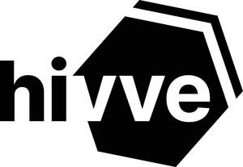
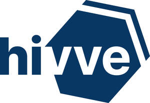

Trade Mark Journal No.2026/011 13 March 2026
UK00004333739 2 February 2026 (9,16,35,36,41,42,45)
Mark 1

Mark 2

- Class 9
- Computer software excluding software for social networking for the purposes of romantic, platonic relationships or professional networking; mobile application software excluding software for social networking for the purposes of romantic, platonic relationships or professional networking; computer software for use as an application programming interface (API) excluding software for social networking for the purposes of romantic, platonic relationships or professional networking; computer software to enable searching of data excluding software for social networking for the purposes of romantic, platonic relationships or professional networking; recorded media excluding recorded media for social networking for the purposes of romantic, platonic relationships or professional networking; software downloadable from the Internet excluding software for social networking for the purposes of romantic, platonic relationships or professional networking; downloadable electronic publications excluding publications relating to social networking for the purposes of romantic, platonic relationships or professional networking; all of the aforementioned goods relating to the collection, management and analysis of information relating to the social, environmental and economic impact of businesses and organizations, and the benchmarking and monitoring of social, environmental and economic performance of businesses and organizations; none of the aforesaid in relation to the management, control, optimisation or efficiency of energy and energy consumption.
- Class 16
- Paper, cardboard; printed matter; publications in the form of printed matter; all of the aforementioned goods relating to the collection, management and analysis of information relating to the social, environmental and economic impact of businesses and organizations, and the benchmarking and monitoring of social, environmental and economic performance of businesses and organizations.
- Class 35
- Business research services; analysis of business information; business consultancy and advisory services; business strategy services; preparation and provision of business reports; market research services; market surveillance; provision of business and commercial information; provision of business information on public and private companies; systemization of information in to computer databases; computer databases (compilation of information into -); all of the aforementioned services relating to the collection, management and analysis of information relating to the social, environmental and economic impact of businesses, organizations and individuals and the benchmarking and monitoring of social, environmental and economic performance of businesses, organizations, projects and individuals; research and analysis of the social, environmental and economic impact of businesses and organizations; provision of information relating to the social, environmental and economic impact of businesses and organizations; benchmarking services; business auditing services; provision of marketplaces for goods/services; organization, operation and supervision of loyalty and incentive schemes; provision of advice, information and consultancy in relation to the aforementioned services; none of the aforesaid in relation to the management, control, optimisation or efficiency of energy and energy consumption.
- Class 36
- Provision of prepaid cards and tokens; issue and redemption of tokens of value; crowdfunding; fund raising services via crowdfunding website; crowdfunding services in the nature of providing financing from money collected from individuals; cryptocurrency services, namely, providing a digital currency or digital token for use by members of an on-line community via a global computer network; cryptocurrency services, namely, a digital currency or digital token, incorporating cryptographic protocols, used to operate and build applications and distributed ledger technology on a decentralized computer platform and as a method of payment for goods and services; issuing of tokens of value ; issuing of tokens of value in relation to incentive schemes; provision of advice, information and consultancy in relation to the aforementioned services.
- Class 41
- Education relating to impact and sustainability management; providing of training relating to impact and sustainability management; the provision of non-downloadable on-line electronic publications relating to impact and sustainability management; hosting of exhibitions, conferences and seminars and networking events for business, cultural and educational purposes relating to impact and sustainability management; organizing and conducting online educational and training events including virtual meetings and seminars relating to impact and sustainability management; all of the aforementioned services relating to the collection, management and analysis of information relating to the social, environmental and economic impact of businesses and organizations, and the benchmarking and monitoring of social, environmental and economic performance of businesses and organizations; provision of advice, information and consultancy in relation to the aforementioned services.
- Class 42
- Providing online non-downloadable software for data collection, management and analysis excluding software for social networking for the purposes of romantic, platonic relationships or professional networking; leasing or providing access to computer software for use by third parties excluding software for social networking for the purposes of romantic, platonic relationships or professional networking; leasing or providing access to computer software for the collection, management and analysis of information via computer systems and computer networks excluding software for social networking for the purposes of romantic, platonic relationships or professional networking; update, maintenance and installation of computer software, computer consultancy services; software development, programming and implementation excluding software for social networking for the purposes of romantic, platonic relationships or professional networking; providing user authentication services using single sign-on technology for online software applications excluding software for social networking for the purposes of romantic, platonic relationships or professional networking; design of software for multimedia data storing and recalling excluding software for social networking for the purposes of romantic, platonic relationships or professional networking; providing access to software via computer networks excluding software for social networking for the purposes of romantic, platonic relationships or professional networking; all of the aforementioned services relating to the collection, management and analysis of information relating to the social, environmental and economic impact of businesses and organizations, and the benchmarking and monitoring of social, environmental and economic performance of businesses and organizations; provision of advice, information and consultancy in relation to the aforementioned services; none of the aforesaid in relation to the management, control, optimisation or efficiency of energy and energy consumption.
- Class 45
- Regulatory compliance auditing; legal services relating to the management, control and granting of licence rights excluding licence rights relating to software for social networking for the purposes of romantic, platonic relationships or professional networking; granting of software licenses excluding software for social networking for the purposes of romantic, platonic relationships or professional networking; provision of advice, information and consultancy in relation to the aforementioned services.
Hivve Group Ltd
Representative: London IP Ltd